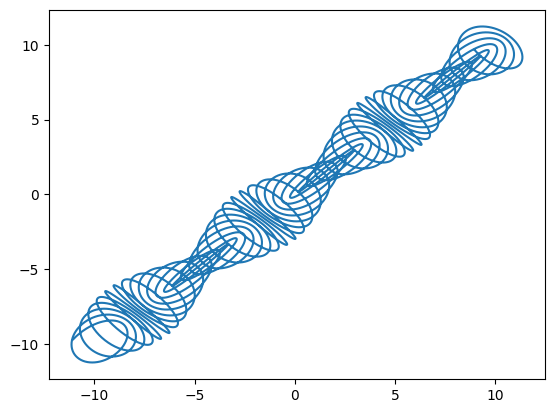
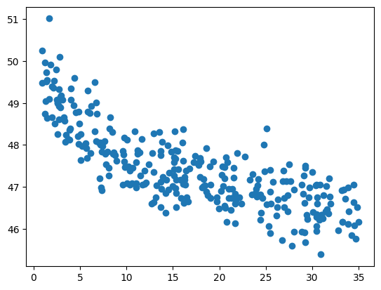
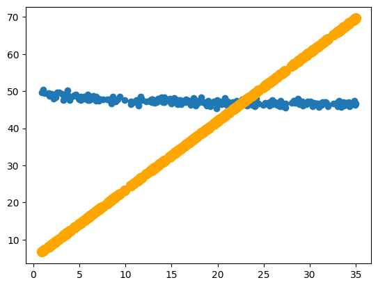
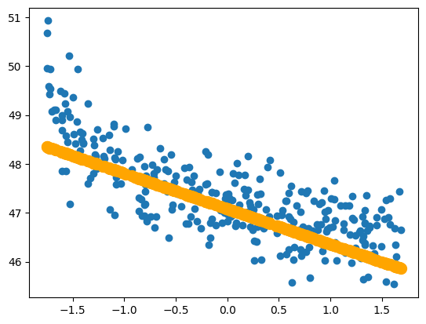
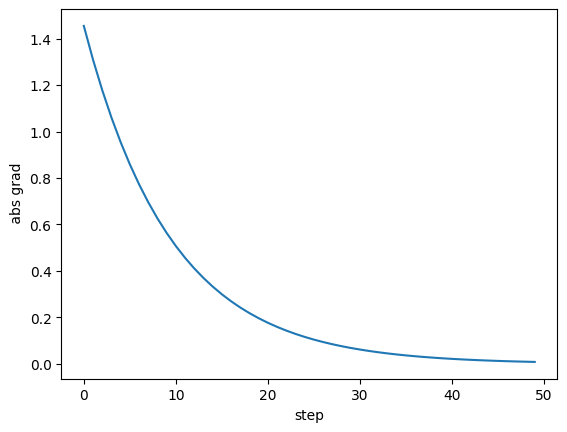
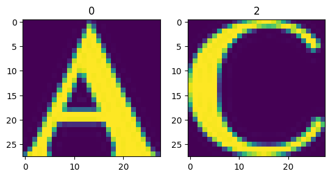
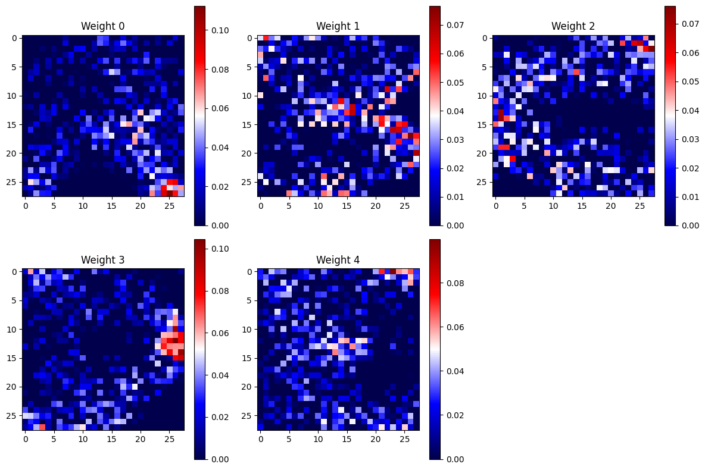
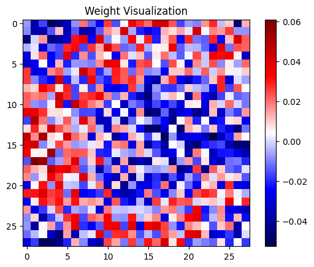
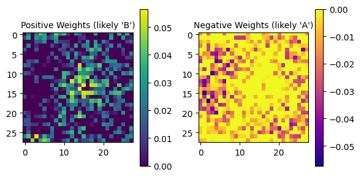

Завершение линейных моделей, автодифференцирование, PyTorch и валидация
Исходный ноутбук занятия 5 октября, предоставленный преподавателем. Ячейки и сохранённые результаты оставлены без правок. В разделе оценки сохранён AssertionError; объяснение многоклассового предсказания есть в конспекте. Для запуска рядом с ноутбуком нужен notmnist.py; он использует NumPy, Matplotlib и scikit-learn и загружает notMNIST. Ноутбук требует также PyTorch.
Скачать .ipynb ↓Intro to PyTorch
special thanks to YSDA team for provided materials
What comes today: - Introduction to PyTorch - Automatic gradient computation - Logistic regression (it's a neural network, actually ;) )
Иллюстрация оригинального ноутбука · открыть отдельно

This notebook will teach you to use pytorch low-level core. You can read about it here.
Pytorch feels differently than other frameworks (like tensorflow/theano) on almost every level. TensorFlow makes your code live in two "worlds" simultaneously: symbolic graphs and actual tensors. First you declare a symbolic "recipe" of how to get from inputs to outputs, then feed it with actual minibatches of data. In pytorch, there's only one world: all tensors have a numeric value.
You compute outputs on the fly without pre-declaring anything. The code looks exactly as in pure numpy with one exception: pytorch computes gradients for you. And can run stuff on GPU. And has a number of pre-implemented building blocks for your neural nets. And a few more things.
Let's dive into it!
# If you are using colab, uncomment this cell
!wget https://raw.githubusercontent.com/girafe-ai/ml-course/25f_msu_dl/week02_dl_optimizers/notmnist.py--2026-10-05 14:17:47-- https://raw.githubusercontent.com/girafe-ai/ml-course/25f_msu_dl/week02_dl_optimizers/notmnist.py Resolving raw.githubusercontent.com (raw.githubusercontent.com)... 185.199.108.133, 185.199.109.133, 185.199.110.133, ... Connecting to raw.githubusercontent.com (raw.githubusercontent.com)|185.199.108.133|:443... connected. HTTP request sent, awaiting response... 200 OK Length: 1848 (1.8K) [text/plain] Saving to: ‘notmnist.py’ notmnist.py 100%[===================>] 1.80K --.-KB/s in 0s 2026-10-05 14:17:48 (34.2 MB/s) - ‘notmnist.py’ saved [1848/1848]
import matplotlib.pyplot as plt
import numpy as np
import torchtorch.__version__'2.11.0+cpu'
a = np.arange(5)# numpy world
x = np.arange(16).reshape(4, 4)
print("X :\n%s\n" % x)
print("X.shape : %s\n" % (x.shape,))
print("add 5 :\n%s\n" % (x + 5))
print("X*X^T :\n%s\n" % np.dot(x, x.T))
print("mean over cols :\n%s\n" % (x.mean(axis=-1)))
print("cumsum of cols :\n%s\n" % (np.cumsum(x, axis=0)))X : [[ 0 1 2 3] [ 4 5 6 7] [ 8 9 10 11] [12 13 14 15]] X.shape : (4, 4) add 5 : [[ 5 6 7 8] [ 9 10 11 12] [13 14 15 16] [17 18 19 20]] X*X^T : [[ 14 38 62 86] [ 38 126 214 302] [ 62 214 366 518] [ 86 302 518 734]] mean over cols : [ 1.5 5.5 9.5 13.5] cumsum of cols : [[ 0 1 2 3] [ 4 6 8 10] [12 15 18 21] [24 28 32 36]]
# pytorch world
x = np.arange(16).reshape(4, 4)
x = torch.tensor(x, dtype=torch.float32) # or torch.arange(0,16).view(4,4)
print("X :\n%s" % x)
print("X.shape : %s\n" % (x.shape,))
print("add 5 :\n%s\n" % (x + 5))
print("X*X^T :\n%s\n" % torch.matmul(x, x.transpose(1, 0))) # short: x.mm(x.t())
print("mean over cols :\n%s\n" % torch.mean(x, dim=-1))
print("cumsum of cols :\n%s" % torch.cumsum(x, dim=0))X :
tensor([[ 0., 1., 2., 3.],
[ 4., 5., 6., 7.],
[ 8., 9., 10., 11.],
[12., 13., 14., 15.]])
X.shape : torch.Size([4, 4])
add 5 :
tensor([[ 5., 6., 7., 8.],
[ 9., 10., 11., 12.],
[13., 14., 15., 16.],
[17., 18., 19., 20.]])
X*X^T :
tensor([[ 14., 38., 62., 86.],
[ 38., 126., 214., 302.],
[ 62., 214., 366., 518.],
[ 86., 302., 518., 734.]])
mean over cols :
tensor([ 1.5000, 5.5000, 9.5000, 13.5000])
cumsum of cols :
tensor([[ 0., 1., 2., 3.],
[ 4., 6., 8., 10.],
[12., 15., 18., 21.],
[24., 28., 32., 36.]])
NumPy and Pytorch
As you can notice, pytorch allows you to hack stuff much the same way you did with numpy. This means that you can see the numeric value of any tensor at any moment of time. Debugging such code can be done with by printing tensors or using any debug tool you want (e.g. gdb).
You could also notice the a few new method names and a different API. So no, there's no compatibility with numpy yet and yes, you'll have to memorize all the names again. Get excited!
Иллюстрация оригинального ноутбука · открыть отдельно

For example,
* If something takes a list/tuple of axes in numpy, you can expect it to take *args in pytorch
* x.reshape([1,2,8]) -> x.view(1,2,8)
* You should swap axis for dim in operations like mean or cumsum
* x.sum(axis=-1) -> x.sum(dim=-1)
* most mathematical operations are the same, but types an shaping is different
* x.astype('int64') -> x.type(torch.LongTensor)
To help you acclimatize, there's a table covering most new things. There's also a neat documentation page.
Finally, if you're stuck with a technical problem, we recommend searching pytorch forumns. Or just googling, which usually works just as efficiently.
If you feel like you almost give up, remember two things: GPU and free gradients. Besides you can always jump back to numpy with x.numpy()
Warmup: trigonometric knotwork
inspired by this post
There are some simple mathematical functions with cool plots. For one, consider this:
t = torch.linspace(-10, 10, steps=10000)
# compute x(t) and y(t) as defined above
x = t - 1.5 * torch.cos(15*t)# None # YOUR CODE HERE
y = t - 1.5 * torch.sin(16*t) # None # YOUR CODE HERE
plt.plot(x.numpy(), y.numpy())[<matplotlib.lines.Line2D at 0x7a2083b35a90>]

if you're done early, try adjusting the formula and seing how it affects the function
Automatic gradients
Any self-respecting DL framework must do your backprop for you. Torch handles this with the autograd module.
The general pipeline looks like this:
* When creating a tensor, you mark it as requires_grad:
* torch.zeros(5, requires_grad=True)
* torch.tensor(np.arange(5), dtype=torch.float32, requires_grad=True)
* Define some differentiable loss = arbitrary_function(a)
* Call loss.backward()
* Gradients are now available as a.grads
Here's an example: let's fit a linear regression on Boston house prices
#from sklearn.datasets import load_bostonx_numpy = np.random.uniform(0.9, 35, 300)
y_numpy = -np.log(x_numpy) + np.random.normal(0, 0.5, size=300) + 50
plt.scatter(x_numpy, y_numpy)
<matplotlib.collections.PathCollection at 0x7a2085e6fcb0>

from sklearn.preprocessing import StandardScaler
sc = StandardScaler()
x_numpy = np.random.uniform(0.9, 35, 300)
y_numpy = -np.log(x_numpy) + np.random.normal(0, 0.5, size=300) + 50
# x_numpy -= x_numpy.mean()
# x_numpy /= x_numpy.std()
# sc.fit(x_numpy)
# x_numpy = sc.transform(x_mn)
# x_numpy = sc.fit_transform(x_numpy)
w = torch.zeros(1, requires_grad=True)
b = torch.zeros(1, requires_grad=True)
x = torch.tensor(x_numpy, dtype=torch.float32)
y = torch.tensor(y_numpy, dtype=torch.float32)x.requires_gradFalse
y_pred = w * x + b
loss = torch.mean((y_pred - y) ** 2)
# propagate gradients
loss.backward()reg = w**2
reg.backward()y_pred.requires_gradTrue
# dL / d y_pred = 2 (-y + y_pred) * x
# d y_pred / dw = xThe gradients are now stored in .grad of those variables that require them.
print(f"dL/dw = {w.grad}\n")
print(f"dL/db = {b.grad}\n")dL/dw = tensor([-5095.7969]) dL/db = tensor([-284.0300])
If you compute gradient from multiple losses, the gradients will add up at variables, therefore it's useful to zero the gradients between iteratons.
np.clip(np.arange(50, 60), a_min=50, a_max=55)array([50, 51, 52, 53, 54, 55, 55, 55, 55, 55])
from IPython.display import clear_outputw = torch.zeros(1, requires_grad=True)
b = torch.zeros(1, requires_grad=True)
for i in range(100):
y_pred = w * x + b
loss = torch.mean((y_pred - y) ** 2)
loss.backward()
w.data -= 0.05 * np.clip(w.grad.data, a_min=-1, a_max=1)
b.data -= 0.05 * np.clip(b.grad.data, a_min=-1, a_max=1)
# zero gradients
w.grad.data.zero_()
b.grad.data.zero_()
# the rest of code is just bells and whistles
if (i + 1) % 5 == 0:
clear_output(True)
plt.scatter(x.data.numpy(), y.data.numpy())
plt.scatter(x.data.numpy(), y_pred.data.numpy(), color="orange", linewidth=5)
plt.show()
print("loss = ", loss.data.numpy())
if loss.data.numpy() < 0.5:
print("Done!")
break
loss = 437.16187
Quest: try implementing and writing some nonlinear regression. You can try quadratic features or some trigonometry, or a simple neural network. The only difference is that now you have more variables and a more complicated y_pred.
Suprizingly, we were walking really close to the edge. Look a few cells above. We have divided the x values by 10 times. Let's what happens if we don't:
# Now we do not divide the x values by 10. See what happens next
w = torch.zeros(1, requires_grad=True)
b = torch.zeros(1, requires_grad=True)
grad_history = []
for i in range(100):
y_pred = w * x + b
loss = torch.mean((y_pred - y) ** 2)
loss.backward()
grad_history.append((w.grad.item(), b.grad.item()))
# Be extremely careful with accessing the .data attribute!
w.data -= 0.05 * w.grad.data
b.data -= 0.05 * b.grad.data
# zero gradients
w.grad.data.zero_()
b.grad.data.zero_()
# the rest of code is just bells and whistles
if (i + 1) % 5 == 0:
clear_output(True)
plt.scatter(x.data.numpy(), y.data.numpy())
plt.scatter(x.data.numpy(), y_pred.data.numpy(), color="orange", linewidth=5)
plt.show()
print("loss = ", loss.data.numpy())
if loss.data.numpy() < 0.5:
print("Done!")
break
loss = 0.41434437 Done!
plt.plot([abs(element[0]) for element in grad_history])
plt.xlabel('step')
plt.ylabel(' abs grad')Text(0, 0.5, ' abs grad')

print(grad_history)[(-473.5144958496094, -45.06561279296875), (9574.380859375, 558.5819091796875), (-193146.109375, -11611.80078125), (3896813.75, 233938.40625), (-78619616.0, -4720118.5), (1586179328.0, 95229784.0), (-32001746944.0, -1921295872.0), (645646909440.0, 38762848256.0), (-13026162900992.0, -782054588416.0), (262807589224448.0, 15778237644800.0), (-5302239132385280.0, -318331735244800.0), (1.0697461300251853e+17, 6422458408108032.0), (-2.1582518525655777e+18, -1.2957544387864166e+17), (4.354351919016182e+19, 2.614231831549051e+18), (-8.785064832620476e+20, -5.274308460125199e+19), (1.772418992719395e+22, 1.0641110829050542e+21), (-3.5759200736630464e+23, -2.146883281226081e+22), (7.214548700883164e+24, 4.331415124113106e+23), (-1.455561554891737e+26, -8.738787599253472e+24), (2.9366487550019813e+27, 1.763082244723649e+26), (-5.924796215150439e+28, -3.557083003402266e+27), (1.195349280428902e+30, 7.17654445403173e+28), (-2.4116609718921758e+31, -1.4478940352621255e+30), (4.865614230945225e+32, 2.921179441745072e+31), (-9.816555026523244e+33, -5.8935864864548875e+32), (1.980525601420545e+35, 1.1890526729879653e+34), (-3.9957823732143057e+36, -2.3989570594448487e+35), (8.061636668657427e+37, 4.8399825301651965e+36), (-inf, -9.764841366859034e+37), (inf, inf), (nan, nan), (nan, nan), (nan, nan), (nan, nan), (nan, nan), (nan, nan), (nan, nan), (nan, nan), (nan, nan), (nan, nan), (nan, nan), (nan, nan), (nan, nan), (nan, nan), (nan, nan), (nan, nan), (nan, nan), (nan, nan), (nan, nan), (nan, nan), (nan, nan), (nan, nan), (nan, nan), (nan, nan), (nan, nan), (nan, nan), (nan, nan), (nan, nan), (nan, nan), (nan, nan), (nan, nan), (nan, nan), (nan, nan), (nan, nan), (nan, nan), (nan, nan), (nan, nan), (nan, nan), (nan, nan), (nan, nan), (nan, nan), (nan, nan), (nan, nan), (nan, nan), (nan, nan), (nan, nan), (nan, nan), (nan, nan), (nan, nan), (nan, nan), (nan, nan), (nan, nan), (nan, nan), (nan, nan), (nan, nan), (nan, nan), (nan, nan), (nan, nan), (nan, nan), (nan, nan), (nan, nan), (nan, nan), (nan, nan), (nan, nan), (nan, nan), (nan, nan), (nan, nan), (nan, nan), (nan, nan), (nan, nan)]
As you can see, the gradients have exploded. We could avoid it by using the smaller learning rate or by using gradient clipping.
You should be really careful using the gradient descent even with such simple models as linear or logistic regression.
Remember! Иллюстрация оригинального ноутбука · открыть отдельно

When dealing with more complex stuff like neural network, it's best if you use tensors the way samurai uses his sword.
High-level pytorch
So far we've been dealing with low-level torch API. While it's absolutely vital for any custom losses or layers, building large neura nets in it is a bit clumsy.
Luckily, there's also a high-level torch interface with a pre-defined layers, activations and training algorithms.
We'll cover them as we go through a simple image recognition problem: classifying letters into "A" vs "B".
from notmnist import load_notmnist # file notmnist.py at this directoryX_train, y_train, X_test, y_test = load_notmnist(letters="ABCDE")
X_train, X_test = X_train.reshape([-1, 784]), X_test.reshape([-1, 784])
print("Train size = %i, test_size = %i" % (len(X_train), len(X_test)))Parsing... found broken img: ./notMNIST_small/A/RGVtb2NyYXRpY2FCb2xkT2xkc3R5bGUgQm9sZC50dGY=.png [it's ok if <10 images are broken] Done Train size = 7023, test_size = 2341
for i in [0, 1]:
plt.subplot(1, 2, i + 1)
plt.imshow(X_train[i].reshape([28, 28]))
plt.title(str(y_train[i]))
Let's start with layers. The main abstraction here is torch.nn.Module
from torch import nnprint(nn.Module.__doc__)Base class for all neural network modules.
Your models should also subclass this class.
Modules can also contain other Modules, allowing them to be nested in
a tree structure. You can assign the submodules as regular attributes::
import torch.nn as nn
import torch.nn.functional as F
class Model(nn.Module):
def __init__(self) -> None:
super().__init__()
self.conv1 = nn.Conv2d(1, 20, 5)
self.conv2 = nn.Conv2d(20, 20, 5)
def forward(self, x):
x = F.relu(self.conv1(x))
return F.relu(self.conv2(x))
Submodules assigned in this way will be registered, and will also have their
parameters converted when you call :meth:`to`, etc.
.. note::
As per the example above, an ``__init__()`` call to the parent class
must be made before assignment on the child.
:ivar training: Boolean represents whether this module is in training or
evaluation mode.
:vartype training: bool
There's a vast library of popular layers and architectures already built for ya'.
This is a binary classification problem, so we'll train a Logistic Regression with sigmoid.
a = nn.Linear(784, 1)a.weight.data = torch.zeros_like(a.weight.data)# create a network that stacks layers on top of each other
model = nn.Sequential()
# add first "dense" layer with 784 input units and 1 output unit.
model.add_module("l1", nn.Linear(784, 1))
# add softmax activation for probabilities. Normalize over axis 1
# note: layer names must be unique
model.add_module("l2", nn.Sigmoid())print("Weight shapes:", [w.shape for w in model.parameters()])Weight shapes: [torch.Size([1, 784]), torch.Size([1])]
# create dummy data with 3 samples and 784 features
x = torch.tensor(X_train[:3], dtype=torch.float32)
y = torch.tensor(y_train[:3], dtype=torch.float32)
# compute outputs given inputs, both are variables
y_predicted = model(x)[:, 0]
y_predicted # display what we've gottensor([0.5849, 0.6206, 0.4163], grad_fn=<SelectBackward0>)
Let's now define a loss function for our model.
The natural choice is to use binary crossentropy (aka logloss, negative llh):
loss_func = nn.BCELoss()loss_func(y_predicted, y)tensor(0.7443, grad_fn=<BinaryCrossEntropyBackward0>)
crossentropy = None # YOUR CODE HERE
loss = loss_func(y, y_predicted) # YOUR CODE HERE
# assert tuple(crossentropy.size()) == (3,), "Crossentropy must be a vector with element per sample"
assert tuple(loss.size()) == (), "Loss must be scalar. Did you forget the mean/sum?"
# assert (
# crossentropy.data.numpy()[0] > 0
# ), "Crossentropy must non-negative, zero only for perfect prediction"
# assert loss.data.numpy() <= np.log(
# 5
# ), "Loss is too large even for untrained model. Please double-check it."Note: you can also find many such functions in torch.nn.functional, just type F.<tab>.
Torch optimizers
When we trained Linear Regression above, we had to manually .zero_() gradients on both our variables. Imagine that code for a 50-layer network.
Again, to keep it from getting dirty, there's torch.optim module with pre-implemented algorithms:
opt = torch.optim.SGD(model.parameters(), lr=0.01)
# here's how it's used:
loss.backward() # add new gradients
opt.step() # change weights
opt.zero_grad() # clear gradientsPutting it all together
# create network again just in case
model = nn.Sequential()
model.add_module("first", nn.Linear(784, 5))
# model.add_module("second", nn.Sigmoid())
opt = torch.optim.SGD(model.parameters(), lr=1e-3)loss_func = nn.CrossEntropyLoss()history = []
grad_hist = []
for i in range(1500):
# sample 256 random images
ix = np.random.randint(0, len(X_train), 256)
x_batch = torch.tensor(X_train[ix], dtype=torch.float32)
y_batch = torch.tensor(y_train[ix], dtype=torch.long)
# predict probabilities
y_predicted = model(x_batch) # YOUR CODE HERE
# print(y_predicted)
# break
# assert y_predicted.dim() == 1, "did you forget to select first column with [:, 0]"
# compute loss, just like before
loss = loss_func(y_predicted, y_batch) # YOUR CODE HERE
# loss += 0.05 * torch.sum(next(model.parameters())**2)
# compute gradients
loss.backward()
# YOUR CODE HERE
grad_hist.append(next(model.parameters()).grad)
# Adam step
opt.step()
# YOUR CODE HERE
# clear gradients
opt.zero_grad()
# YOUR CODE HERE
history.append(loss.data.numpy())
if i % 10 == 0:
print("step #%i | mean loss = %.3f" % (i, np.mean(history[-10:])))step #0 | mean loss = 0.261 step #10 | mean loss = 0.248 step #20 | mean loss = 0.237 step #30 | mean loss = 0.244 step #40 | mean loss = 0.224 step #50 | mean loss = 0.247 step #60 | mean loss = 0.270 step #70 | mean loss = 0.249 step #80 | mean loss = 0.254 step #90 | mean loss = 0.248 step #100 | mean loss = 0.238 step #110 | mean loss = 0.231 step #120 | mean loss = 0.250 step #130 | mean loss = 0.237 step #140 | mean loss = 0.252 step #150 | mean loss = 0.246 step #160 | mean loss = 0.257 step #170 | mean loss = 0.252 step #180 | mean loss = 0.229 step #190 | mean loss = 0.260 step #200 | mean loss = 0.254 step #210 | mean loss = 0.245 step #220 | mean loss = 0.230 step #230 | mean loss = 0.259 step #240 | mean loss = 0.256 step #250 | mean loss = 0.253 step #260 | mean loss = 0.262 step #270 | mean loss = 0.249 step #280 | mean loss = 0.245 step #290 | mean loss = 0.238 step #300 | mean loss = 0.242 step #310 | mean loss = 0.246 step #320 | mean loss = 0.253 step #330 | mean loss = 0.262 step #340 | mean loss = 0.237 step #350 | mean loss = 0.226 step #360 | mean loss = 0.226 step #370 | mean loss = 0.234 step #380 | mean loss = 0.227 step #390 | mean loss = 0.229 step #400 | mean loss = 0.223 step #410 | mean loss = 0.235 step #420 | mean loss = 0.257 step #430 | mean loss = 0.220 step #440 | mean loss = 0.241 step #450 | mean loss = 0.256 step #460 | mean loss = 0.238 step #470 | mean loss = 0.227 step #480 | mean loss = 0.252 step #490 | mean loss = 0.258 step #500 | mean loss = 0.244 step #510 | mean loss = 0.242 step #520 | mean loss = 0.260 step #530 | mean loss = 0.250 step #540 | mean loss = 0.238 step #550 | mean loss = 0.273 step #560 | mean loss = 0.256 step #570 | mean loss = 0.226 step #580 | mean loss = 0.243 step #590 | mean loss = 0.245 step #600 | mean loss = 0.229 step #610 | mean loss = 0.232 step #620 | mean loss = 0.246 step #630 | mean loss = 0.243 step #640 | mean loss = 0.252 step #650 | mean loss = 0.247 step #660 | mean loss = 0.252 step #670 | mean loss = 0.257 step #680 | mean loss = 0.266 step #690 | mean loss = 0.251 step #700 | mean loss = 0.257 step #710 | mean loss = 0.249 step #720 | mean loss = 0.266 step #730 | mean loss = 0.243 step #740 | mean loss = 0.223 step #750 | mean loss = 0.239 step #760 | mean loss = 0.240 step #770 | mean loss = 0.239 step #780 | mean loss = 0.231 step #790 | mean loss = 0.227 step #800 | mean loss = 0.231 step #810 | mean loss = 0.268 step #820 | mean loss = 0.224 step #830 | mean loss = 0.246 step #840 | mean loss = 0.248 step #850 | mean loss = 0.226 step #860 | mean loss = 0.226 step #870 | mean loss = 0.254 step #880 | mean loss = 0.251 step #890 | mean loss = 0.258 step #900 | mean loss = 0.245 step #910 | mean loss = 0.246 step #920 | mean loss = 0.279 step #930 | mean loss = 0.249 step #940 | mean loss = 0.245 step #950 | mean loss = 0.229 step #960 | mean loss = 0.251 step #970 | mean loss = 0.251 step #980 | mean loss = 0.231 step #990 | mean loss = 0.243 step #1000 | mean loss = 0.240 step #1010 | mean loss = 0.227 step #1020 | mean loss = 0.242 step #1030 | mean loss = 0.233 step #1040 | mean loss = 0.256 step #1050 | mean loss = 0.237 step #1060 | mean loss = 0.241 step #1070 | mean loss = 0.221 step #1080 | mean loss = 0.238 step #1090 | mean loss = 0.227 step #1100 | mean loss = 0.236 step #1110 | mean loss = 0.215 step #1120 | mean loss = 0.249 step #1130 | mean loss = 0.220 step #1140 | mean loss = 0.223 step #1150 | mean loss = 0.217 step #1160 | mean loss = 0.248 step #1170 | mean loss = 0.208 step #1180 | mean loss = 0.199 step #1190 | mean loss = 0.246 step #1200 | mean loss = 0.232 step #1210 | mean loss = 0.231 step #1220 | mean loss = 0.237 step #1230 | mean loss = 0.226 step #1240 | mean loss = 0.232 step #1250 | mean loss = 0.236 step #1260 | mean loss = 0.233 step #1270 | mean loss = 0.251 step #1280 | mean loss = 0.233 step #1290 | mean loss = 0.212 step #1300 | mean loss = 0.229 step #1310 | mean loss = 0.231 step #1320 | mean loss = 0.237 step #1330 | mean loss = 0.221 step #1340 | mean loss = 0.215 step #1350 | mean loss = 0.227 step #1360 | mean loss = 0.233 step #1370 | mean loss = 0.239 step #1380 | mean loss = 0.221 step #1390 | mean loss = 0.222 step #1400 | mean loss = 0.231 step #1410 | mean loss = 0.210 step #1420 | mean loss = 0.247 step #1430 | mean loss = 0.229 step #1440 | mean loss = 0.240 step #1450 | mean loss = 0.215 step #1460 | mean loss = 0.245 step #1470 | mean loss = 0.244 step #1480 | mean loss = 0.235 step #1490 | mean loss = 0.252
Debugging tips: * make sure your model predicts probabilities correctly. Just print them and see what's inside. * don't forget minus sign in the loss function! It's a mistake 99% ppl do at some point. * make sure you zero-out gradients after each step. Srsly:) * In general, pytorch's error messages are quite helpful, read 'em before you google 'em. * if you see nan/inf, print what happens at each iteration to find our where exactly it occurs. * If loss goes down and then turns nan midway through, try smaller learning rate. (Our current loss formula is unstable).
Evaluation
Let's see how our model performs on test data
# use your model to predict classes (0 or 1) for all test samples
pred_test = model(torch.from_numpy(X_test))[:, 0] # YOUR CODE HERE
pred_test = np.array(pred_test > 0.5)
assert isinstance(pred_test, np.ndarray), "please return np array, not %s" % type(pred_test)
assert pred_test.shape == y_test.shape, "please predict one class for each test sample"
assert np.in1d(pred_test, y_test).all(), "please predict class indexes"
accuracy = np.mean(pred_test == y_test)
print("Test accuracy: %.5f" % accuracy)
assert accuracy > 0.95, "try training longer"
print("Great job!")Test accuracy: 0.94877
/tmp/ipykernel_1285/2134824564.py:3: DeprecationWarning: __array__ implementation doesn't accept a copy keyword, so passing copy=False failed. __array__ must implement 'dtype' and 'copy' keyword arguments. pred_test = np.array(pred_test > 0.5) /tmp/ipykernel_1285/2134824564.py:7: DeprecationWarning: `in1d` is deprecated. Use `np.isin` instead. assert np.in1d(pred_test, y_test).all(), "please predict class indexes"
AssertionError: try training longer
Bonus: interpretation of neural networks
weights = list(model.parameters())[0]Let's visualize the learned weights. Since the input was a flattened image (784 features), we can reshape the weight vector back into a 28x28 image. The positive values in the weight image correspond to pixels that contribute positively to the prediction of one class, and negative values contribute positively to the other class.
# Get the weights from the first linear layer
weights = list(model.parameters())[0].data.numpy() # shape: (5, 784)
fig, axes = plt.subplots(2, 3, figsize=(12, 8))
for i, ax in enumerate(axes.flat[:5]):
im = ax.imshow(np.clip(weights[i], a_min=0, a_max=weights[i].max()).reshape(28, 28), cmap='seismic')
ax.set_title(f"Weight {i}")
fig.colorbar(im, ax=ax)
# Hide the empty last cell
axes.flat[5].axis('off')
plt.tight_layout()
plt.show()

(5, 784)
# Reshape the weights into a 28x28 image

To better see the patterns for each letter, we can visualize the positive and negative weights separately. Positive weights will highlight pixels important for one class, while negative weights will highlight pixels important for the other. Since our target is 0 for 'A' and 1 for 'B', positive weights likely correspond to features of 'B', and negative weights to features of 'A'.
# Get the weights from the first linear layer
weights = list(model.parameters())[0].data.numpy()
# Reshape the weights into a 28x28 image
weights_image = weights.reshape(28, 28)
# Visualize positive weights (likely corresponding to 'B')
plt.figure(figsize=(6, 3))
plt.subplot(1, 2, 1)
plt.imshow(np.maximum(weights_image, 0), cmap='viridis')
plt.title("Positive Weights (likely 'B')", fontsize=10)
plt.colorbar()
# Visualize negative weights (likely corresponding to 'A')
plt.subplot(1, 2, 2)
plt.imshow(np.minimum(weights_image, 0), cmap='plasma')
plt.title("Negative Weights (likely 'A')", fontsize=10)
plt.colorbar()
plt.tight_layout()
plt.show()
# Get the weights from the first linear layer
weights = list(model.parameters())[0].data.numpy()
# Reshape the weights into a 28x28 image
weights_image = weights.reshape(28, 28)
# Visualize positive weights (likely corresponding to 'B')
plt.figure(figsize=(6, 3))
plt.subplot(1, 3, 1)
plt.imshow(np.maximum(weights_image, 0), cmap='viridis')
plt.title("Positive Weights (likely 'B')", fontsize=10)
plt.colorbar()
# Visualize negative weights (likely corresponding to 'A')
plt.subplot(1, 2, )
plt.imshow(np.minimum(weights_image, 0), cmap='plasma')
plt.title("Negative Weights (likely 'A')", fontsize=10)
plt.colorbar()
plt.tight_layout()
plt.show()More about pytorch:
Outline
- PyTorch is a great choice to start writing simple (and not so simple) models from scratch
- Autodiff will help you to get the derivatives even for complex functions (if implemented correctly), so use it wisely
- Be careful with data normalization and monitor your loss/gradients values